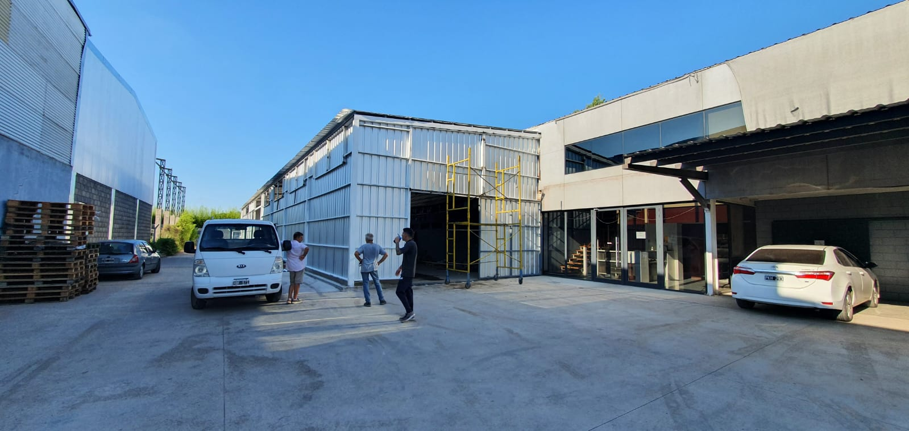
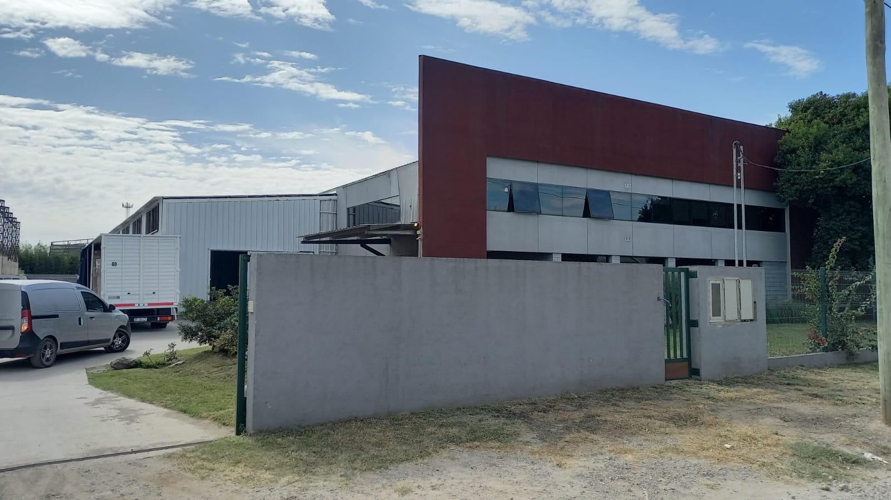

FERMAR
Local


Fermar es una empresa familiar ubicada en la provincia de Córdoba, que se dedica a la producción y comercialización de productos panificados orientados al cuidado de la salud.
La elaboración de sus productos se realiza bajo estrictos estándares de calidad, asegurándose de bridarle al consumidor productos de primer nivel.